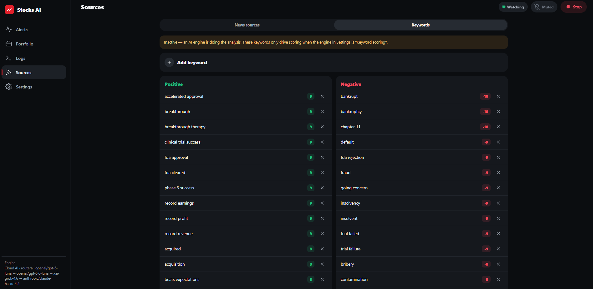

Key features
01 A local model does the judging
Every article goes to an Ollama model running on the machine. It's asked first whether the news could move a price at all — routine reports, rehashes and opinion get rejected — then, for what survives, to name the affected company, ticker, sentiment, impact rating and a short explanation. No API keys, no accounts, nothing sent to a cloud service.
02 A high bar for interrupting you
You're only notified when sentiment is clearly positive or negative and impact is HIGH or CRITICAL. Everything else is logged and dropped. Most articles produce no alert, which is the point — a notifier that fires often is a notifier you mute.
03 Offline keyword fallback
Flip one flag and a weighted-keyword scorer replaces the LLM — no model needed, instant. It weights headline mentions far above body text, handles negation, and its ~200-term vocabulary is editable in-app.

04 Sources that detect themselves
Paste a name and URL and it works out the type: RSS feeds are parsed, web pages are checked for a feed link then scraped, and X profile URLs are rewritten to a Nitter mirror. Changes apply to a running watcher without a restart.
05 Portfolio-aware relevance
Holdings are tracked with live prices and P/L, and named in the prompt as higher relevance. Owning a stock doesn't change whether you get alerted — it just tags negative alerts Owned so risk to your holdings stands out.
06 Private by default
Alerts go out over ntfy.sh, where a topic is a public channel — so there's no default topic and push is off until you set one. Ownership disclosure is off too: the [OWNED] marker would tell anyone reading that topic which stocks you actually hold.
In short
Financial news is almost entirely noise, and filtering it is a judgement problem — which is what a language model is for. Since the input includes my own holdings, it runs locally. The hard part of an alerting system turned out to be deciding not to alert: long silent stretches are the expected behaviour, so the UI had to make "working but quiet" visibly different from "broken". The README also states plainly that a small local model can misread an article or invent a ticker, because for a tool that touches money that disclosure is part of the product.